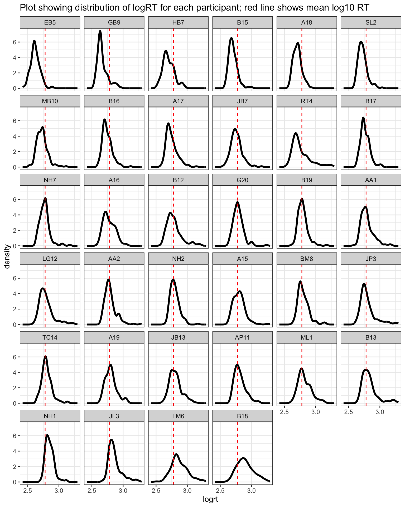

5 Developing linear mixed-effects models
5.1 Motivations: to grow in sophistication
Linear mixed-effects models are important, interesting, and sometimes challenging. We have worked through two chapters (see Chapter 3, Chapter 4) in which we have aimed to learn:
- To recognize the situations where we shall see multilevel structured data and therefore where we will need to apply multilevel or mixed-effects models.
- To understand the nature and the advantages of these models: what they are, and why they work better than other kinds of models, given multilevel data.
- To practice how we code for mixed-effects models, and how we read or write about the results.
We now need to develop our understanding and skills further. And we now need to examine some of the complexities that we may face when we work with mixed-effects models.
Our approach will continue to depend on verbal explanation, visualization and a practical code-based approach to the modeling.
5.2 The key idea to get us started
Shrinkage or regularization means that models of data should be excited by the data but not too excited.
This means our models work better if they are informed by all the data, and take into account random differences but also if they are not too strongly influenced by individual (participant or item) data.
5.3 Targets
We are probably now at a stage, in the development of our skills and understanding, where we can be more specific about our targets for learning: what capacities or abilities we want to have by the time we complete the course. I have held back specifying the targets in this way because, first, we had to learn the basic vocabulary. Now that we have done that, we can lay out the targets against which we can assess the progression of our learning.
We have three capacities we seek to develop. These include the capacity:
- to understand mixed-effects models;
- to work with these models practically or efficiently in R;
- and to communicate their results effectively (to ourselves and others).
We should be aware that the development of skills and understanding in relation to each of these capacities will travel at different speeds for different people, and within any person at different speeds for different capacities.
We should also be aware that our internal evaluation of our understanding will not exactly match the evaluation that comes from external assessment. In other words, we might not be satisfied with our understanding but, still, our understanding might be satisfactory. It might be that we can learn to say in words what mixed-effects models are or involve, or what their results mean, very effectively even if we remain unsure about our understanding.
For these reasons, I specify what we are aiming to develop in terms of what we can do. You can test your development against this checklist of targets for learning.
- We want to develop the capacity to understand mixed-effects models, the capacity to:
- recognize where data have a multilevel structure;
- recognize where multilevel or mixed-effects models are required;
- distinguish the elements of a mixed-effects model, including fixed effects and random effects;
- explain how random effects can be understood in terms of random differences (or deviations) between groups or classes or individuals, in intercepts or slopes;
- explain how random effects can be understood in terms of variances, as a means to account for random differences between groups or classes or individuals in intercepts or slopes;
- explain how mixed-effects models work better than linear models, for multilevel structured data;
- explain how mixed-effects models work better because they allow partial-pooling of estimates.
- We want to develop the capacity to work practically with mixed-effects models in R, the capacity to:
- specify a mixed-effects model in
lmer()code; - identify how the mixed-effects model code varies, depending on the kinds of random effects that are assumed;
- identify the elements of the output or results that come from an
lmer()mixed-effects analysis; - interpret the fixed-effects estimates;
- interpret the random effects estimates, including both the variance and covariance estimates.
- We want to develop the capacity to communicate the results of mixed-effects models effectively, to ourselves and to others, the capacity to:
- describe in words and summary tables the results of a mixed-effects model;
- visualize the effects estimates or predictions from a mixed-effects model.
5.4 Study guide
I have provided a collection of materials you can use. Here, I explain what they are and how I suggest you use them.
1. Video recordings of lectures
1.1. I have recorded a lecture in three parts. The lectures should be accessible by anyone who has the link.
1.2. I suggest you watch the recordings then read the rest of this chapter. The lectures provide a summary of the main points.
2. Chapter: 03-mixed
2.1. I have written this chapter to discuss the main ideas and set out the practical steps you can follow to start to develop the skills required to analyse multilevel structured data with crossed random effects.
2.2. The practical elements include data tidying, visualization and analysis steps.
2.3. You can read the chapter, run the code, and do the exercises.
- Read in the example ML word recognition study dataset.
- Edit example code to create alternate visualizations of variable distributions and of the relationships between critical variables.
- Experiment with the .R code used to work with the example data.
- Run linear mixed-effects models of demonstration data.
- Run linear mixed-effects models of alternate data sets.
- Review the recommended readings (Section 5.16).
3. Practical workbook materials
3.1 In the following sections, I describe the practical steps, and associated resources, you can use for your learning.
5.5 The data we will work with: ML word recognition study
In this chapter, we will be working with the ML word recognition study dataset. ML examined visual word recognition in younger and older adults using the lexical decision task.
In lexical decision, participants are presented with a stimulus: a string of letters that is either a real word (e.g., ‘car’) or a made-up or non-word (e.g., ‘cas’). Participants are required to respond to the stimulus by pressing a button to indicate either that they think the stimulus is a word or that they think it is a non-word. Each complete sequence of events, in which a stimulus is presented and a response is recorded, is known as a trial. In the lexical decision task implemented by ML, all study participants were presented with a mix of 160 word stimuli and 160 non-word stimuli, in random order, in a total of 320 trials.
Each stimulus was presented one at a time on the computer screen. The critical outcome measure was the reaction time (RT) or latency for each response. Observed RT represents the interval of time from the moment the stimulus was first presented (the stimulus onset) to the moment the response was made (the response onset).
Lexical decision is a very popular technique for examining word recognition, especially in adults. While not every graduate student will be interested in word recognition, or reading, everyone should understand that tasks like lexical decision are similar to a range of other tasks used in experimental psychological science.
The critical feature of the study, here, is that we have an outcome – a decision response – observed multiple times (for each stimulus) for each participant. We shall be analyzing the speed of response, reaction time (RT), measured in milliseconds (ms).
In our analyses, the focus of our interest will be on the ways in which participant attributes (like age) or word properties (like frequency) influence the speed of response in a task designed measure the ability to recognize visually presented English words. In analyzing the effects of participant attributes on recognition response RTs, we will use data – about those attributes – that were recorded using a mix of survey questions (about age, etc.) and standardized ability tests that were administered to study participants alongside the lexical decision task.
The total number of participants for this study was 39, including a group of younger adults and a group of older adults. Information was collected about the participants’ age, education and gender. In addition, participants were asked to complete ability measures (TOWRE sight word and phonemic tests, Torgesen et al. (1999)) and a measure of reading experience (Author Recognition Test, ART, Masterson & Hayes (2007)).
5.5.1 Research hypotheses
Instead of posing a simple and general research question, we shall orient our work around a set of quite specific predictions. ML hypothesized:
- Effects of stimulus attributes
- Predicting that words that are shorter, that look like more other words, and that appear frequently in the language will be easier to recognize.
- Effects of participant attributes
- Predicting that older readers would be faster and more accurate than younger readers in word recognition.
- Effects of interactions between the effects of word attributes and person attributes.
- Predicting that better (older) readers will show smaller effects of word attributes.
In this chapter, we can focus on one specific prediction as we work through the practical steps of conducting an analysis using linear mixed-effects models.
- Research hypothesis: Words that are shorter, that look like more other words, and that appear frequently in the language will be easier to recognize.
5.5.2 The ML recognition study data variables
In summary, ML collected data on lexical decision task response reaction times (RTs) and accuracy and information on participants, including age, reading ability and reading experience. In addition, she collected information on the properties of the lexical decision stimulus items, including variables like the length or frequency of words (values taken from the English Lexicon Project, Balota et al. (2007)).
The ML study data includes the following variables that we will work with (as well as some you can ignore):
- Identifying variables
subjectID– identifying code for participantsitem_name– words presented as stimuliitem_number– identifying code for words presented
- Response variables
RT– response reaction time (ms), for responses to words
- Participant attribute variables
Age– in yearsGender– coded M (male), F (female)TOWRE_wordacc– word reading skill, words read correctly (out of 104)TOWRE_nonwordacc– nonword reading skill, nonwords (made up words) read correctly (out of 63)ART_HRminusFR– reading experience score
- Stimulus property variables
Length– word length, in lettersOrtho_N– orthographic neighbourhood size, how many other words in English a stimulus word looks likeOLD– orthographic Levenshtein distance, how many letter edits (addition, deletion or substitution) it would take to make a stimulus word look like another English word (a measure of orthographic neighbourhood) (Yarkoni et al., 2008)BG_Sum, BG_Mean, BG_Freq_By_Pos– measures of how common are pairs of letters that compose stimulus wordsSUBTLWF, LgSUBTLWF, SUBTLCD, LgSUBTLCD– measures of how common stimulus words are, taken from the SUBTLEX corpus analysis of word frequency (Brysbaert & New, 2009)
5.5.3 Locate and download the data file
You can download the data-03-mixed.zip files folder to get the data you need for the practical work we will be doing for this chapter.
The data are held in one file:
subjects.behaviour.words-310114.csvwhich holds information about the (word) stimuli, participants, and the responses recorded in the ML study.
The .csv file is a comma separated values file and can be opened in Excel.
The data file is collected together with the .R scripts:
03-mixed-workbook.Rthe workbook you will need to do the practical exercises.03-mixed-workbook-answers.Rwith answers to questions and code for exercises.
5.6 Tidy the data
In Section 4.7, we saw how we may need to tidy the data we collect in experimental studies: combining data about responses with data about participant attributes or stimulus properties, and restructuring the data so that they are in a tidy format. For this class, many steps in the process of data tidying were completed previously. Thus, we only need to perform steps 1, 3 and 4 of the usual data tidying process:
- Import the data or read the data into R, see Section 5.6.1;
- Restructure the data;
- Select or transform variables, see Section 5.6.4;
- Filter observations, see Section 5.6.3.
We are going to first filter the observations, then transform the outcome variable. We will explain why we have to do this as we proceed.
We will use tidyverse library functions to do this work, as usual.
library(tidyverse)5.6.1 Read-in the data file using the read_csv() function
I am going to assume you have downloaded the data file, and that you know where it is. We use read_csv to read one file into R.
ML.all <- read_csv("subjects.behaviour.words-310114.csv", na = "-999")The data file subjects.behaviour.words-310114.csv holds all the data about everything (behaviour, participants, stimuli) we need for our analysis wor.
It is always a good idea to first inspect what you have got when you read a data file into R before you do anything more demanding.
- You cannot assume that the data are what you think they are
- or that the data are structured or coded in the ways that you think (or have been told) they should be structured or coded.
You can inspect the first few rows of the dataset using head().
Warning in subjectID == c("GB9", "NH1", "A15", "B18"): longer object length is
not a multiple of shorter object length| item_number | subjectID | Test | Age | Years_in_education | Gender | TOWRE_wordacc | TOWRE_nonwordacc | ART_HRminusFR | RT | COT | Subject | Trial.order | item_name | Length | Ortho_N | BG_Sum | BG_Mean | BG_Freq_By_Pos | item_type | SUBTLWF | LgSUBTLWF | SUBTLCD | LgSUBTLCD | OLD |
|---|---|---|---|---|---|---|---|---|---|---|---|---|---|---|---|---|---|---|---|---|---|---|---|---|
| 1 | GB9 | ALT | 21 | 11 | F | 78 | 41 | 18 | 368.66 | 134057.8 | GB9 | 54 | went | 4 | 15 | 249 | 198 | 29 | word | 411.51 | 4.322 | 79.6 | 3.825 | 1.2 |
| 1 | NH1 | TAL | 52 | 18 | M | 78 | 56 | 33 | 724.83 | 742737.4 | NH1 | 148 | went | 4 | 15 | 249 | 198 | 29 | word | 411.51 | 4.322 | 79.6 | 3.825 | 1.2 |
| 1 | A15 | LTA | 21 | 16 | F | 95 | 57 | 9 | 483.71 | 861801.0 | A15 | 278 | went | 4 | 15 | 249 | 198 | 29 | word | 411.51 | 4.322 | 79.6 | 3.825 | 1.2 |
| 1 | B18 | TLA | 69 | 11 | M | 85 | 54 | 10 | 517.62 | 1024583.4 | b18 | 318 | went | 4 | 15 | 249 | 198 | 29 | word | 411.51 | 4.322 | 79.6 | 3.825 | 1.2 |
You can examine all the variables using summary().
summary(ML.all) item_number subjectID Test Age
Min. : 1.00 Length:5440 Length:5440 Min. :16.00
1st Qu.: 40.75 Class :character Class :character 1st Qu.:21.00
Median : 80.50 Mode :character Mode :character Median :21.00
Mean : 80.50 Mean :36.94
3rd Qu.:120.25 3rd Qu.:53.00
Max. :160.00 Max. :73.00
Years_in_education Gender TOWRE_wordacc TOWRE_nonwordacc
Min. :11.00 Length:5440 Min. : 68.00 Min. :16.00
1st Qu.:13.00 Class :character 1st Qu.: 84.00 1st Qu.:50.00
Median :16.00 Mode :character Median : 93.00 Median :55.50
Mean :14.94 Mean : 91.24 Mean :52.41
3rd Qu.:16.00 3rd Qu.: 98.00 3rd Qu.:57.00
Max. :19.00 Max. :104.00 Max. :63.00
ART_HRminusFR RT COT Subject
Min. : 1.00 Min. :-2000.0 Min. : 50094 Length:5440
1st Qu.: 7.00 1st Qu.: 498.1 1st Qu.: 297205 Class :character
Median :11.00 Median : 577.6 Median : 552854 Mode :character
Mean :15.15 Mean : 565.3 Mean : 575780
3rd Qu.:21.00 3rd Qu.: 677.4 3rd Qu.: 810108
Max. :43.00 Max. : 1978.4 Max. :1583651
Trial.order item_name Length Ortho_N
Min. : 21.0 Length:5440 Min. :3.0 Min. : 0.000
1st Qu.:100.8 Class :character 1st Qu.:4.0 1st Qu.: 3.000
Median :180.5 Mode :character Median :4.0 Median : 6.000
Mean :180.5 Mean :4.3 Mean : 7.069
3rd Qu.:260.2 3rd Qu.:5.0 3rd Qu.:11.000
Max. :340.0 Max. :6.0 Max. :24.000
BG_Sum BG_Mean BG_Freq_By_Pos item_type
Min. : 3.00 Min. : 1.00 Min. : 1.0 Length:5440
1st Qu.: 81.75 1st Qu.: 67.75 1st Qu.: 74.5 Class :character
Median :151.50 Median :153.50 Median :158.0 Mode :character
Mean :155.89 Mean :153.82 Mean :149.6
3rd Qu.:234.75 3rd Qu.:239.25 3rd Qu.:227.0
Max. :314.00 Max. :316.00 Max. :295.0
SUBTLWF LgSUBTLWF SUBTLCD LgSUBTLCD
Min. : 0.57 Min. :1.477 Min. : 0.32 Min. :1.447
1st Qu.: 17.36 1st Qu.:2.947 1st Qu.: 6.67 1st Qu.:2.748
Median : 69.30 Median :3.549 Median :23.64 Median :3.298
Mean : 442.01 Mean :3.521 Mean :36.52 Mean :3.137
3rd Qu.: 290.70 3rd Qu.:4.171 3rd Qu.:65.24 3rd Qu.:3.739
Max. :6161.41 Max. :5.497 Max. :99.70 Max. :3.922
OLD
Min. :1.000
1st Qu.:1.288
Median :1.550
Mean :1.512
3rd Qu.:1.750
Max. :2.050 The summary shows some features of the dataset, or of how R interprets the dataset, that are of immediate interest to us, though we do not necessarily have to do anything about them.
- We can see statistical summaries – showing the mean, median, minimum and maximum, etc. – of numeric variables like the outcome variable
RT. - We can see statistical summaries, also, of variables that comprise number values but which we do not want to be treated as numbers, e.g., the word stimulus coding variable
item_number. - We can see that some variables are simply listed as
Class: character. That tells us that one or more values in the columns in the datasheet that correspond to these variables are words or strings of letters or alphanumeric characters. - There is no sign of the presence of missing values in this dataset, no counts of
NAs.
We do not really want R to treat a coding variable like item_number as numeric: it functions as a categorical or nominal variable, a factor. And we want R to treat coding variables like subjectID as factors. In Section 3.8.3, we saw how we can require R to handle variables exactly as we require it to using coercion. In Section 4.9.1, we saw how we can determine how R treats variables at the read-in stage, using col_types() specification. We are going to do neither here because we do not have to do this work; not doing it will have no impact on our analyses at this point.
What we do need to do is deal with a problem that is already apparent in the summary statistics – did you spot it? If we look at the summary, we can see that RT includes values as low as -2000. That cannot be right.
5.6.2 Examine the distribution of raw RT data using density plots
We should examine the distribution of the outcome variable, lexical decision response reaction time (RT in ms). Observations about variable value distributions are a part of Exploratory Data Analysis and serve to catch errors in the dataset (e.g. incorrectly recorded scores) but also to inform the researcher’s understanding of their own data.
We shall examine the distribution of the outcome variable, lexical decision response reaction time (RT in ms), using density plots. An alternative method would be to use histograms. I choose to use density plots because they allow the easy comparison of the distributions of values of a continuous numeric variable like reaction time. A density plot shows a curve. You can say that the density corresponds to the height of the curve for a given value of the variable being depicted, and that it is related to the probability of observing values of the variable within some range of values (Howell, 2016).
Getting a density plot of RTs of responses is easy using ggplot() code.
ML.all %>%
ggplot(aes(x = RT)) +
geom_density(size=1.5) +
geom_rug(alpha = .2) +
ggtitle("Raw RT") +
theme_bw() The code delivers a plot (Figure 5.1) showing three peaks in the distribution of RT values. You can see that there is a peak of RT observations around 500-1000ms, another smaller peak around -500ms, and a third smaller peak around -2000ms.
The density plot shows the reaction times recorded for participants’ button press ‘yes’ responses to word stimuli in the lexical decision task. The peaks of negative RTs represent observations that are impossible.
Remember that reaction time, in a task like lexical decision, represents the interval in time between the onset of a task stimulus (in lexical decision, a word or a nonword) and the onset of the response (the button press to indicate the lexical decision). We cannot have negative time intervals. The explanation is that ML collected her data using the DMDX experimental software application (Forster & Forster, 2003). DMDX records the reaction times for incorrect responses as negative RTs.
The code to produce Figure 5.1 works in a series of steps.
ML.all %>%takes the dataset, from the ML study, that we have read in to the R workspace and pipes it to the visualization code, next.ggplot(aes(x = RT)) +creates a plot object in which the x-axis variable is specified asRT. The values of this variable will be mapped to geometric objects, i.e. plot features, that you can see, next.geom_density(size=1.5) +first displays the distribution of values in the variableRTas a density curve. The argumentsize=1.5tells R to make the line \(1.5 \times\) the thickness of the line used by default to show variation in density.
Some further information is added to the plot, next.
geom_rug(alpha = .2) +with a command that tells R to add a rug plot below the density curve.ggtitle("Raw RT")makes a plot title.
Notice that beneath the curve of the density plot, you can see a series of vertical lines. Each line represents the x-axis location of an RT observation in the ML study data set. This rug plot represents the distribution of RT observations in one dimension.
geom_rug()draws a vertical line at each location on the x-axis that we observe a value of the variable, RT, named inaes(x = RT).geom_rug(alpha = .2)reduces the opacity of each line, usingalpha, to ensure the reader can see how the RT observations are denser in some places than others.
You can see that we have many more observations of RTs from around 250ms to 1250ms, where the rug of lines is thickest, under the peak of the density plot. This indicates what the two kinds of plots are doing.
5.6.2.1 Exercise
You should try out alternative visualisation methods to reveal the patterns in the distribution of variables in the ML dataset (or in your own data).
- Take a look at the
geomsdocumented in the{ggplot2}library reference section here. - Experiment with code to answer the following questions:
- Would a histogram or a frequency polygon provide a more informative view? Take a look here for advice.
- What about a dotplot? Take a look here for advice
5.6.3 Filter observations
The density plot shows us that the raw ML lexical decision RT variable includes negative RT values corresponding to incorrect response. These have to be removed. We can do this quite efficiently by creating a subset of the original “raw” data, defined according to the RT variable using the {dpyr} library filter() function.
ML.all.correct <- filter(ML.all, RT >= 200)After we have removed negative (error) RTs, we check that the size of the dataset – here, the number of rows – matches our expectations. We do this to make sure that we did the filter operation correctly.
length(ML.all$RT)[1] 5440length(ML.all.correct$RT)[1] 5257If you run the length() function calls then you should see that the length or number of observations or rows in the ML.all.correct dataset should be smaller than the number of observations in the ML.all dataset.
It is wise to check that the operations you perform to tidy, process or wrangle data actually do do what you mean them to do. Checks can be performed, for each processing stage, by:
- Forming expectations or predictions about what the operation is supposed to do e.g. filter out some rows by some number;
- Check what you get against these predictions e.g. count the number of rows before versus after filtering.
Having obtained a new data frame with data on just those trials where responses were correct, we can plot the distribution of RTs for just the correct responses (Figure 5.2).
ML.all.correct %>%
ggplot(aes(x = RT)) +
geom_density(size=1.5) +
geom_rug(alpha = .2) +
ggtitle("Correct RTs") +
theme_bw()
The filter code is written to subset the data by rows using a condition on the values of the RT variable.
ML.all.correct <- filter(ML.all, RT >= 200) works as follows.
ML.all.correct <- filter(ML.all ...)creates a new dataset with a new nameML.all.correctfrom the old datasetML.allusing thefilter()function.filter(... RT >= 200)specifies an argument for thefilter()function.
In effect, we are asking R to check every value in the RT column.
- R will do a check through the
ML.alldataset, row by row. - If a row includes an RT that is greater than or equal to 200 then that row will be included in the new dataset
ML.all.correct. This is what I mean by using a condition. - But if a row includes an RT that is less than 200, then that row will not be included. We express this condition as
RT >= 200.
The length() function will count the elements in whatever object is specified as an argument in the function call.
- This means that if you put a variable name into the function as in
length(dataset$variable)it will count how long that variable is – how many rows there are in the column. - If that variable happens to be, as here, part of a dataset, the same calculation will tell you how many rows there are in the dataset as a whole.
- If you just enter
length(dataset), naming some dataset, then the function will return a count of the number of columns in the dataset.
5.6.3.1 Exercise
Vary the filter conditions in different ways.
- Change the threshold for including RTs from
RT >= 200to something else: you can change the number, or you can change the operator from>=to a different comparison (try=, <, <=, >. - Can you assess what impact the change has?
Note that you can count the number of observations (rows) in a dataset using e.g. length().
5.6.3.2 Filtering observations as a decision in the psychological research workflow
I choose to filter out or exclude not only error responses (where \(RT < 0ms\)) but also short reaction times (where \(RT < 200ms\)). I think that any response in the lexical decision task that is recorded as less than 200ms cannot possibly represent a real word recognition response. Participants who complete experimental psychological tasks can and do press the button before they have time to engage the psychological processes (like word recognition) that the tasks we administer are designed to probe (like lexical decision).
There is some relevant literature that concerns the speed at which neural word recognition processes operate. However, I think you should note that the threshold I am setting for exclusion, here, is essentially arbitrary. If you think about it, I could have set the threshold at any number from \(100-300ms\) or some other range.
What is guiding me in setting the filter threshold is experience. But other researchers will have different experiences and set different thresholds.
- This is why using exclusion criteria to remove data is problematic.
Filtering or re-coding observations is an important element of the research workflow in psychological science. How we do or do not remove observations from original data may have an impact on our results (as explored by Steegen et al. (2016)). It is important, therefore, that we learn how to do this reproducibly using, for example, R scripts that we can share with our research reports.
I would argue that, at minimum, a researcher should report their research including:
- What exclusion criteria they use to remove data, explaining why.
- Report analyses with and without exclusions, to indicate if their results are sensitive to their decisions.
You can read further information about the practicalities of using R to do filtering here.
You can read a brief discussion of the impacts of researcher choices in dataset construction in Section 7.2.4.2 and in Steegen et al. (2016).
5.6.4 Select or transform the variables: the log10 transformation of RT
Figure 5.2 shows that we have successfully removed all errors (negative RTs) but now we see just how skewed the RT distribution is. Note the long tail of longer RTs.
Most researchers assume that participants – healthy young adults – take about 500-1000ms to perform the task and that values outside that range correspond to either fast guesses (RTs that are too short) or to distracted or tired or bored responses (RTs that are too long). In theory, the lexical decision task should be probing automatic cognitive processes, measuring the steps from perception to visual word recognition in the time interval between the moment the stimulus is first shown and the moment the button is pressed by the participant to indicate a response. Thus, it might seem natural to exclude extreme RT values which might correspond not to automatic cognitive processes but to unknowable distraction events or boredom and inattention. However, we shall complete no further data exclusions.
For now, we can look at a commonly used method to deal with the skew that we typically see when we examine reaction time distributions. RT distributions are usually skewed with a long tail of longer RTs. You can always take longer to press the button but there is a limit to how much faster you can make your response.
Generally, we assume that departures from a model’s predictions about our observations (the linear model residuals) are normally distributed, and we often assume that the relationship between outcome and predictor variables is linear (Cohen et al., 2003). We can ensure that our data are compliant with both assumptions by transforming the RT distribution.
It is not cheating to transform variables. Transformations of data variables can be helpful for a variety of reasons in the analysis of psychological data (Cohen et al., 2003; Gelman & Hill, 2007). I do recommend, however, that you are careful to report what transformations you use, and why you do them.
Psychology researchers often take the log (often the log base 10) of RT values before performing an analysis. Transforming RTs to the log base 10 of RT values has the effect of correcting the skew – bringing the larger RTs ‘closer’ (e.g., \(1000 = 3\) in log10) to those near the middle which do not change as much (e.g. \(500 = 2.7\) in log10).
ML.all.correct$logrt <- log10(ML.all.correct$RT) We can see the effect of the transformation if we plot the log10 transformed RTs (see Figure 5.3). We arrive at a distribution that more closely approximates the normal distribution.
ML.all.correct %>%
ggplot(aes(x = logrt)) +
geom_density(size = 1.5) +
geom_rug(alpha = .2) +
ggtitle("Correct log10 RTs") +
theme_bw()The log10() function works as follows:-
ML.all.correct$logrt <- log10(...)creates a a new variablelogrt, adding it to theML.all.correctdataset. The variable is created using the transformation functionlog10().log10(ML.all.correct$RT)creates a the new variable by transforming (to log10) the values of the old variable,RT.
There are other log transformation functions and we often see researchers using the natural log instead of the log base 10 as discussed here
5.6.5 Data tidying – conclusions
Even when data have been structured appropriately, we will still, often, need to do some tidying before we can do an analysis. Most research work involving quantitative evidence requires a big chunk of data tidying or other processing before you get to the statistics.
Our data are now ready for analysis.
5.7 Repeated measures designs and crossed random effects
As we saw in Chapter 4, many Psychologists conduct studies where it is not sensible to think of observations as being nested (Baayen et al., 2008a). In this chapter, we turn to the ML word recognition study dataset, which has a structure similar to the CP study data that we worked with previously. Again, the core concern is that the data come from a study with a repeated-measures design where the experimenter presented multiple stimuli for response to each participant, for several participants, so that we have multiple observations for each participant and multiple observations for each stimulus. Getting practice with this kind of data will help you to easily recognize what you have got when you see it in your own work.
ML asked all participants in a sample of people to read a selection of words, a sample of words from the language.
For each participant, we will have multiple observations and these observations will not be independent. One participant will tend to be slower or less accurate compared to another. Her responses may be more or less susceptible to the effects of the experimental variables. The lowest trial-level observations can be grouped with respect to participants. However, the data can also be grouped by stimuli.
For each stimulus word, there are multiple observations and these observations will not be independent. One stimulus may prove to be more challenging to all participants compared to another, eliciting slower or less accurate responses on average. In addition, if there are within-items effects, we may ask if the impact of those within-items effects is more prominent, stronger, among responses to some items compared to others.
Given this common repeated-measures design, we can analyse the outcome variable in relation to:
- fixed effects: the impact of independent variables like participant reading skill or word frequency;
- random effects: the impact of random or unexplained differences between participants and also between stimuli.
5.8 Working with mixed-effects models
We are going to respond to the multilevel (or crossed random effects) structure in the data by using linear mixed-effects models to analyze the data. This week, we are going to look at what mixed-effects models do from a new perspective.
Our concern will be with different ways of thinking about why mixed-effects models are superior to linear models where data have a multilevel structure. Mixed-effects models tend to be more accurate in this (very common) situation because of what is called partial pooling and shrinkage or regularization. We use our practical example to explore these ideas.
5.8.1 Use facetting in ggplot to examine data by person
To get started, we can examine – for each individual separately – the distribution of log RT observations, in Figure 5.4.
ML.all.correct %>%
group_by(subjectID) %>%
mutate(mean_logrt = mean(logrt, na.rm = TRUE)) %>%
ungroup() %>%
mutate(subjectID = fct_reorder(subjectID, mean_logrt)) %>%
ggplot(aes(x = logrt)) +
geom_density(size = 1.25) +
facet_wrap(~ subjectID) +
geom_vline(xintercept = 2.778807, colour = "red", linetype = 2) +
scale_x_continuous(breaks = c(2.5,3)) +
ggtitle("Plot showing distribution of logRT for each participant; red line shows mean log10 RT") +
theme_bw()
Figure 5.4 shows that RT distributions vary considerably between people. The plot imposes a dashed red line to indicate where the mean log10 RT is, calculated over all observations in the dataset. The plot shows the distribution of log RT for each participant, as a density drawn separately for each person. The individual plots are ordered by the mean log RT calculated per person, so plots appear in order from the fastest to the slowest.
The grid of plots illustrates some interesting features about the data in the ML study sample. You can see how the distribution of log RT varies between individuals: some people show widely spread reaction times; some people show quite tight or narrow distributions. You can see how the shapes of the distributions varies: some people show skew; others do not. I do not see that the variation in the shapes of the distributions is related to the average speed of the person’s responses.
I think the key message of the plot is that some distributions are wider (RTs are more spread out) than others. We might be concerned that people who present more variable reaction times (wider distributions) may be associated with less reliable estimates of their average response speed, or of the impact of word attributes (like word frequency) on their response speed.
5.8.1.1 Combining data processing and plotting code {sec-dev-mixed-combine-wrangling-plotting}
The plotting code I used to produce Figure 5.4 progresses through a series of steps. This example demonstrates how you can combine data tidying and plotting steps in a single sequence, using tidyverse functions and the %>% pipe, so I will take the time to explain what is going on.
My aim is to create a grid of individual plots, showing the distribution of log RTs for each participant, so that the plots are presented in order, from the fastest participant to the slowest. Take a look at the plotting code. We can explain how it works, step by step.
ML.all.correct %>%
group_by(subjectID) %>%
mutate(mean_logrt = mean(logrt, na.rm = TRUE)) %>%
ungroup() %>%
mutate(subjectID = fct_reorder(subjectID, mean_logrt)) %>%
ggplot(aes(x = logrt)) +
geom_density(size = 1.25) +
facet_wrap(~ subjectID) +
geom_vline(xintercept = 2.778807, colour = "red", linetype = 2) +
scale_x_continuous(breaks = c(2.5,3)) +
ggtitle("Plot showing distribution of logRT for each participant; red line shows mean log10 RT") +
theme_bw()You will see that we present the distribution of RTs using geom_density() and that we present a separate plot for each person’s data using facet_wrap(). To these elements, we add some pre-processing steps to calculate the average response speed of each individual, and to reorder the dataset by those averages.
It will make it easier to understand what is going on if we consider the code in chunks.
First, we pre-process the data before we feed it into the plotting code.
ML.all.correct %>%
group_by(subjectID) %>%
mutate(mean_logrt = mean(logrt, na.rm = TRUE)) %>%
ungroup() %>%
mutate(subjectID = fct_reorder(subjectID, mean_logrt)) %>%
...ML.all.correct %>%takes the selected filtered datasetML.all.correctand pipes it%>%to the next step.group_by(subjectID) %>%tells R to group the data bysubject ID. We have a set of multiple log RT observations for eachsubjectIDbecause each participant was asked to respond to multiple word stimuli.mutate(mean_logrt = mean(logrt, na.rm = TRUE))next calculates and stores the mean log RT for each person. We create a new variablemean_logrt. We calculate the average of the set of log RTs recorded for eachsubjectIDand construct the new variablemean_logrtfrom these averages.
We do not need to treat the data in groups so we remove the grouping, next.
- Using
ungroup() %>%means that, having grouped the data to calculate the mean log RTs, weungroupthe dataset so that R can look at all observations in the next step. mutate(subjectID = fct_reorder(subjectID, mean_logrt)) %>%asks R to look at all log RT observations in the dataset, and change the top-to-bottom order of the rows.
We ask R to order observations – using subjectID in fct_reorder() – so that each person’s data are listed by their average speed, mean_logrt from the fastest to the slowest. We then pipe these ordered data to the plotting code, next.
If you delete or comment out these first lines, you will see that R uses just a default ordering, drawing the plot for each person in the alphabetical order of their subjectID codes.
Try it. Don’t forget to start with ML.all.correct %>%.
Second, we draw the plots, using the data we have pre-processed.
ML.all.correct %>%
...
ggplot(aes(x = logrt)) +
geom_density(size = 1.25) +
facet_wrap(~ subjectID) +
...The key functions that create a grid of density plots are the following.
ggplot(aes(x = logrt))tells R to work withlogrtas the x-axis variable. We shall be plotting the distribution oflogrt.geom_density(...)draws a density plot to show the distribution of log RT, using a thicker linesize = 1.25facet_wrap(~ subjectID)creates a different plot for each level of thesubjectIDfactor: we want to see a separate plot for each participant.
facet_wrap(~ subjectID)works to split the dataset up by participant, with observations corresponding to each participant identified by theirsubjectID, and to then split the plotting to show the distribution of log RT separately for each participant.
I wanted to present the plots in order of the average speed of response of participants. If you look at Figure 5.4, you can see that the position of the peak of the log RT distribution for each participant moves, from the fastest plots where the peak is around \(log RT = 2.5\) (shown from the top left of the grid), to the slowest plots where the peak is around \(log RT = 2.75\) (shown towards the bottom right of the grid)
We can then use further ggplot functions to edit the appearance of the plot, to make it more useful.
...
geom_vline(xintercept = 2.778807, colour = "red", linetype = 2) +
scale_x_continuous(breaks = c(2.5,3)) +
ggtitle("Plot showing distribution of logRT for each participant; red line shows mean log10 RT") +
theme_bw()geom_vline(xintercept = 2.778807, colour = "red", linetype = 2)draws a vertical red dashed line at the location of the mean log RT, the average of all log RTs over all participants in the dataset.scale_x_continuous(breaks = c(2.5,3))adjusts the x-axis labeling. Theggplotdefault might draw too many x-axis labels i.e. showing possible log RT values as tick marks on the bottom line of the plot. I want to avoid this as sometimes all the labels can be crowded together, making them harder to read.
- Drawing a vertical line at the mean calculated overall is designed to help the reader (you) calibrate their comparison of the data from different people.
5.8.1.2 Exercises
It is often useful to experiment with example code to figure out how it works.
One way you can do this is by commenting out one line of code, at a time by putting the # at the start of the line.
- If you do this, you can see what the line of code does by, effectively, asking R to ignore it.
Another way you can experiment with code is by seeing what you can change and what effect the changes have.
- Can you work out how to adapt the plotting code to show a grid of histograms instead of density plots?
- Can you work out how to adapt the code to show a grid of plots indicating the distribution of log RT by different words instead of participants?
5.8.2 Approximations to Linear Mixed-effects models: complete pooling
As we have discussed in previous chapters, a good way to approach a mixed-effects analysis is by first estimating the effects of the experimental variables (here, frequency) using linear models, ignoring the hierarchical structure in the data.
A linear model of multilevel structured data can be regarded as an approximation to the better analysis.
We model the effects of interest, using all the data (hence, complete pooling) but ignoring the differences between participants. This means we can see something of the ‘true’ picture of our data through the linear model results but the linear model misses important information, which the mixed-effects model will include, that would improve its performance.
As we saw, in a similar analysis in ?sec-sec-intro-mixed, we can estimate the relationship between reading reaction times (here, lexical decision RTs) and word frequency using a linear model:
\[ Y_{ij} = \beta_0 + \beta_1X_j + e_{ij} \]
Where:
- \(Y_{ij}\) is the value of the observed outcome variable, the log RT of the response made by the \(i\) participant to the \(j\) item;
- \(\beta_1X_j\) refers to the fixed effect of the explanatory variable (here, word frequency), where the frequency value \(X_j\) is different for different words \(j\), and \(\beta_1\) is the estimated coefficient of the effect due to the relationship between response speed and word frequency;
- \(e_{ij}\) is the residual error term, representing the differences between observed \(Y_{ij}\) and predicted values (given the model) for each response made by the \(i\) participant to the \(j\) item.
The linear model is fit in R using the lm() function.
ML.all.correct.lm <- lm(logrt ~
LgSUBTLCD,
data = ML.all.correct)
summary(ML.all.correct.lm)
Call:
lm(formula = logrt ~ LgSUBTLCD, data = ML.all.correct)
Residuals:
Min 1Q Median 3Q Max
-0.41677 -0.07083 -0.01163 0.05489 0.53411
Coefficients:
Estimate Std. Error t value Pr(>|t|)
(Intercept) 2.885383 0.007117 405.41 <2e-16 ***
LgSUBTLCD -0.033850 0.002209 -15.32 <2e-16 ***
---
Signif. codes: 0 '***' 0.001 '**' 0.01 '*' 0.05 '.' 0.1 ' ' 1
Residual standard error: 0.1095 on 5255 degrees of freedom
Multiple R-squared: 0.04277, Adjusted R-squared: 0.04259
F-statistic: 234.8 on 1 and 5255 DF, p-value: < 2.2e-16In the estimates from this linear model, we see an approximate first answer to our prediction.
- Research hypothesis: Words that are shorter, that look like more other words, and that appear frequently in the language will be easier to recognize.
- Result: We can see that, in this first analysis, the estimated effect of word frequency is \(\beta = -0.033850\).
I know this looks like a very small number but you should realize that the estimates for the coefficients of fixed effects like the frequency effect are scaled according to the outcome. Here, the outcome is log10 RT, where a log10 RT of 3 equals 1000ms, and, as we can calculate in R
log10(0.925)[1] -0.03385827Also, remember that frequency is scaled in logs too, so the estimate of the coefficient tells us how log10 RT changes for unit change in log frequency. The coefficient represents the estimated change in log10 RT for unit change in log frequency LgSUBTLCD.
The estimate indicates that as word log frequency increases, responses logRT decreases by \(-0.033850\).
In this model, all the information from all participants is analyzed. In discussions of mixed-effects analyses, we say that this is a complete pooling model. This is because all the data have been pooled together, that is, we use all observations in the sample to estimate the effect of frequency.
In this model, the observations are assumed to be independent. However, we suppose that the assumption of independence is questionable given the expectation that participants will differ in their overall speed, and in the extent to which their response speed is affected by factors like word frequency.
5.8.2.1 Exercises
- Vary the linear model using different outcomes or predictors.
- The ML study data, like the CP study data, are rich with possibility. It would be useful to experiment with it.
- Change the predictor from frequency to something else: what do you see when you visualize the relationship between outcome and predictor variables using scatterplots?
- Specify linear models with different predictors: do the relationships you see in plots match the coefficients you see in the model estimates?
I would recommend that you both estimate the effects of variables and visualize the relationships between variables using scatterplots. If you combine reflection on the model estimates with evaluation of what the plots show you then you will be able to see how reading model results and reading plots can reveal the correspondences between the two ways of looking at your data.
5.8.3 Approximations to Linear Mixed-effects models: no pooling
We can examine variation between participants by analyzing the data for each participant’s responses separately, fitting a different linear model of the effect of word frequency on lexical decision RTs for each participant separately. Figure 5.5 presents a grid or trellis of plots, one plot per person. In each plot, you can see points corresponding to the log RT of the responses made by each participant to the stimulus words.
In working with R, we often benefit from the vast R knowledge ecosystem.
- I was able to produce the sequence of plots Figure 5.5, Figure 5.6, Figure 5.7 and Figure 5.8 thanks to this very helpful blog post by TJ Mahr
In all plots, the pink or red line represents the complete pooling model estimate of the effect of frequency on response RTs. The line is the same for each participant because there is only one estimated effect, based on all data for all participants.
In addition, in each plot, you can see a green line. You can see that the line varies between participants. This represents the effect of frequency estimated using just the data for each participant, analyzed separately. These are the no pooling estimates. We call them the no pooling estimates because each is based just on the data from one participant.
Figure 5.5 reveals substantial differences between participants in both average response speed and the frequency effect.
We may further predict variation in standard errors between participants given, also, the differences between participants in the spread of log RT, illustrated by Figure 5.4. Basically, where the distribution of log RT is more widely spread out, for any one participant, there it will be harder for us to estimate with certainty the mean or the sources of variance for the participant’s response speed.
You will notice that the no pooling and complete pooling estimates tend to be quite similar. But for some participants – more than for others – there is variation between the estimates.
You can reflect that the complete pooling is unsatisfactory because it ignores the variation between the participants: some people are slower than others; some people do show a larger frequency effect than others. You can also reflect that the no pooling is unsatisfactory because it ignores the similarities between the participants.
While there is variation between participants there is also similarity across the group so that the effect of frequency is similar between participants.
What we need is an analytic method that is capable of both estimating the overall average population-level effect (here, of word frequency) and taking into account the differences between sampling units (here, participants).
That method is linear mixed-effects modeling.
5.9 The linear mixed-effects model
5.9.1 Fixed and random effects
As you have seen before, we can account for the variation – the differences between participants in intercepts and slopes.
First, we model the intercept as two terms:
\[ \beta_{0i} = \gamma_0 + U_{0i} \]
Where:
- \(\gamma_{0}\) is the average intercept, and
- \(u_{0i}\) is the difference for each participant between their intercept and the average intercept.
Second, we can model the frequency effect as two terms:
\[ \beta_{1i} = \gamma_1 + U_{1i} \]
Where:
- \(\gamma_{10}\) is the average slope, and:
- \(U_{1i}\) represents the difference for each participant between the slope of their frequency effect and the average slope.
We can then incorporate in a single model the fixed effects due to the average intercept and the average frequency effect, as well as the random effects – the error variance due to unexplained differences between participants in intercepts and in frequency effects:
\[ Y_{ij} = \gamma_0 + \gamma_1X_j + U_{0i}+ U_{1i}X_j + e_{ij} \]
Where the outcome \(Y_{ij}\) is related to:
- the average intercept \(\gamma_0\) and differences between \(i\) participants in the intercept \(U_{0i}\);
- the average effect of the explanatory variable frequency \(\gamma_1X_j\) and differences between \(i\) participants in the slope \(U_{1i}X_j\);
- in addition to residual error variance \(e_{ij}\).
5.9.2 Variance and covariance
As we first saw in Chapter 4, in conducting mixed-effects analyses, we do not aim to examine the specific deviation (here, for each participant) from the average intercept or the average effect or slope. We estimate just the spread of deviations by-participants.
A mixed-effects model like our final model actually includes fixed effects corresponding to the intercept and the slope of the word frequency effect plus the variances:
- \(var(U_{0i})\) variance of deviations by-participants from the average intercept;
- \(var(U_{1i}X_j)\) variance of deviations by-participants from the average slope of the frequency effect;
- \(var(e_{ij})\) residuals, at the response level, after taking into account all other terms.
We may expect the random effects of participants or items to covary: for example, participants who are slow to respond may also be more susceptible to the frequency effect. Thus our specification of the random effects of the model can incorporate terms corresponding to the covariance of random effects:
- \(covar(U_{0i}, U_{1i}X_j)\)
5.9.3 Random effects of differences between stimuli
As we know, some words elicit slower and some elicit faster responses on average. As we discussed in the last chapter (Section 4.10), if we did not take such variation into account, we might spuriously identify an experimental effect actually due just to unexplained between-items differences in intercepts (Clark, 1973; Raaijmakers et al., 1999) committing an error: the language as fixed effect fallacy.
We can model the random effect of items on intercepts by modeling the intercept as two terms:
\[ \beta_{0j} = \gamma_0 + W_{0j} \]
Where:
- \(\gamma_{0}\) is the average intercept, and
- \(W_{0j}\) represents the deviation, for each word, between the average intercept and the per-word intercept.
Note that I ignore the possibility, for now, of differences between items in the slopes of fixed effects but I do come back to this.
The term the language as fixed effect fallacy (Clark, 1973; Raaijmakers et al., 1999) implies that thinking about the random effects of stimulus differences applies only when we are looking at experiments about language. But you should remember that we need to think about the impact of random differences between stimuli whenever we present samples of stimuli to participants, and we collect observations about multiple responses for each stimulus. This is true whatever the nature of the stimuli (see e.g. Judd et al., 2012).
5.9.4 A model including random effects of differences between stimuli as well as participants
Our model can now incorporate the random effects of participants as well as items:
\[ Y_{ij} = \gamma_0 + \gamma_1X_j + U_{0i}+ U_{1i}X_j + W_{0j} + e_{ij} \]
In this model, the outcome \(Y_{ij}\) is related to:
- the average intercept \(\gamma_0\) and the word frequency effect \(\gamma_1X_j\);
- plus random effects due to unexplained differences between participants in intercepts \(U_{0i}\) and in the slope of the frequency effect \(U_{1i}X_j\);
- as well as random differences between items in intercepts \(W_{0j}\);
- in addition to the residual term \(e_{ij}\).
5.9.5 Fitting a mixed-effect model using lmer()
We fit a mixed-effects model of the \(logrt \sim \text{frequency}\) relationship using the lmer() function, taking into account:
- the fact that the study data have a hierarchical structure – with observations sensibly grouped by participant;
- the fact that both the frequency effect, and average speed, may vary between participants;
- and the fact that the average speed of response can vary between responses to different stimuli.
The model syntax corresponds to the statistical formula and the code is written as:
ML.all.correct.lmer <- lmer(logrt ~
LgSUBTLCD +
(LgSUBTLCD + 1|subjectID) +
(1|item_name),
data = ML.all.correct)
summary(ML.all.correct.lmer)As will now be getting familiar, the code works as follows:
ML.all.correct.lmer <- lmer(...)creates a linear mixed-effects model object using thelmer()function.logrt ~ LgSUBTLCDthe fixed effect in the model is expressed as a formula in which the outcome or dependent variablelogrtis predicted~by the independent or predictor variableLgSUBTLCDword frequency.
If there were more terms in the model, the terms would be added in series separated by +
The random effects part of the model is then specified as follows.
- We first have the random effects associated with random differences between participants:
(...|subjectID)adds random effects corresponding to random differences between sample groups (participants subjects) coded by thesubjectIDvariable.(...1 |subjectID)including random differences between sample groups (subjectID) in intercepts coded1.(LgSUBTLCD... |subjectID)and random differences between sample groups (subjectID) in the slopes of the frequency effect coded by using theLgSUBTLCDvariable name.
- Then, we have the random effects associated with random differences between stimuli:
(1|item_name)adds a random effect to account for random differences between sample groups (item_name) in intercepts coded1.
...(..., data = ML.all.correct)specifies the dataset in which you can find the variables named in the model fitting code.- Lastly, we can then specify
summary(ML.all.correct.lmer)to get a summary of the fitted model.
5.9.6 Reading the lmer() results
If you run the model code as written then you would see the following results.
ML.all.correct.lmer <- lmer(logrt ~
LgSUBTLCD +
(LgSUBTLCD + 1|subjectID) +
(1|item_name),
data = ML.all.correct)
summary(ML.all.correct.lmer)Linear mixed model fit by REML ['lmerMod']
Formula: logrt ~ LgSUBTLCD + (LgSUBTLCD + 1 | subjectID) + (1 | item_name)
Data: ML.all.correct
REML criterion at convergence: -9868.1
Scaled residuals:
Min 1Q Median 3Q Max
-3.6307 -0.6324 -0.1483 0.4340 5.6132
Random effects:
Groups Name Variance Std.Dev. Corr
item_name (Intercept) 0.0003268 0.01808
subjectID (Intercept) 0.0054212 0.07363
LgSUBTLCD 0.0002005 0.01416 -0.63
Residual 0.0084333 0.09183
Number of obs: 5257, groups: item_name, 160; subjectID, 34
Fixed effects:
Estimate Std. Error t value
(Intercept) 2.887997 0.015479 186.577
LgSUBTLCD -0.034471 0.003693 -9.333
Correlation of Fixed Effects:
(Intr)
LgSUBTLCD -0.764In these results, we see:
- First, information about the function used to fit the model, and the model object created by the
lmer()function call. - Then, we see the model formula
logrt ~ LgSUBTLCD + (LgSUBTLCD + 1|subjectID) + (1|item_name). - Then, we see
REML criterion at convergenceabout the model fitting process, which we can usually ignore. - Then, we see information about the distribution of the model residuals.
- Then, we see the
Random Effects.
Notice that the statistics are Variance Std.Dev. Corr., that is, the variance, the corresponding standard deviation, and the correlation estimates associated with the random effects.
- We see
Residualerror variance, just like in a linear model, corresponding to a distribution or spread of deviations between the model prediction and the observed RT for each response made by a participant to a stimulus. - We see
Varianceterms corresponding to what can be understood as group-level residuals. Here, the variance due to random differences between the average intercept (over all data) and the intercept for each participant, and the variance due to random differences between the average slope of the frequency effect and the slope for each participant. - We also see the variance due to random differences between the average intercept (over all data) and the intercept for responses to each word stimulus.
- And we see the
Correstimate, telling us about the covariance between random deviations (between participants) in the intercepts and in the slopes of the frequency effect.
- Last, just as for linear models, we see estimates of the coefficients (of the slopes) of the fixed effects, the intercept and the slope of the
logrts ~ LgSUBTLCDrelationship.
We can compare this estimate with our previous lm() estimate for the effect of frequency.
- Research hypothesis: Words that are shorter, that look like more other words, and that appear frequently in the language will be easier to recognize.
- Result: We can see that, in this mixed-effects analysis, the estimated effect of word frequency is now \(\beta = -0.034471\).
The estimate is different, a bit smaller. While the change in the estimate is also small, we may remember that we are looking at slope estimates for predicted change in log RT, in an experimental research area in which effects are often of the order of 10s of milliseconds. The estimates, and changes in the estimates, will tend to be quite small.
Note that we see coefficient estimates, as in a linear model summary but no p-values.
- We will come back to this, see Section 5.13.4.
- However, note that if \(t >= 2\) we can suppose that (for a large dataset) an effect is significant at the \(.05\) significance level.
5.10 Mixed-effects models, partial pooling, and shrinkage or regularisation of estimates
What is the impact of the incorporation of random effects – the variance and covariance terms – in mixed-effects models? Mixed-effects models can be understood, in general, as a method to compromise between ignoring the differences between groups (here, participants constitute groups of data) as in complete pooling or focusing entirely on each group (participant) as in no pooling (Gelman & Hill, 2007). In this discussion, I am going to refer to the differences between participants but you can assume that the lesson applies generally to any situation in which you have different units in a multilevel structured dataset in which the units correspond to groups or clusters of data.
5.10.1 Overfitting
The problem with ignoring the differences between groups (participants), as in the complete pooling model (here, the linear model), has been obvious when we examined the differences between participants (or between classes) in slopes and intercepts in previous weeks. The problem with focusing entirely on each participant, as in the no pooling model, has not been made apparent in our discussion yet.
If we analyze each participant separately then we will get, for each participant, for our model of the frequency effect, the per-participant estimate of the intercept and the per-participant estimate of the slope of the frequency effect. These no-pooling estimates will tend to exaggerate or overstate the differences between participants (Gelman & Hill, 2007). By basing the estimates on just the data for a person, in each per-participant analysis, the no-pooling approach overfits the data.
You could say that the no-pooling approach gives us estimates that depend too much on the sample of data we have got, and are unlikely to be similar to the estimates we would see in other samples in future studies.
The no-pooling estimates are too strongly influenced by the data we are currently analyzing.
5.10.2 Partial pooling: shrinkage or borrowing strength
If we look closely at Figure 5.5, we can see that there are similarities as well as differences between participants. Our analysis must take both into account.
What happens in mixed-effects models is that we pool information, calculating the estimates for each participant, in part based on the information we have for the whole sample (all participants, in complete pooling), in part based on the information we have about the specific participant (one participant, in no pooling). Thus, for example, the estimated intercept for a participant in a mixed-effects model is given by the weighted average (Snijders & Bosker, 2004) of:
- the intercept estimate given by an analysis of just that participant’s data (no pooling estimate;
- and the intercept estimate given by analysis of all participants’ data (complete pooling estimate).
The weighted average will reflect our relative level of information about the participant’s responses compared to how much information we have about all participants’ responses.
For some participants, we will have less information – maybe they made many errors, so we have fewer correct responses for an analysis. For these people, because we have less information, the intercept estimate will get pulled (shrunk) towards the overall (complete pooling, all data) estimate.
For other participants, we have more information – maybe they made all correct responses. For these people, because we have more information, the intercept estimate will be based more on the data for each participant.
To make sense of what this means, think about the differences between participants in how much reliable information we can have, given our sample, about their average level of response speed or about how they are affected by experimental variables. Think back to my comments about Figure 5.4, about the differences between participants in how spread out the distributions of their log RT values are. Recall that I said that where participants’ responses are more spread out – just as where we have less observations for some participants than for others – we shall inevitably have less certainty about our estimates for the effects that influence their performance if we base our account on just their data. Mixed-effects models perform better – as prediction models – than no pooling approaches because they are not relying, for any participant, on just their sometimes unreliable data.
We can look again at a plot showing the data for each participant. Figure 5.6 presents a grid or trellis of plots, one plot per person. In each plot, you can see points corresponding to the RT of each response made by a participant to a stimulus word. In all plots, the pink line represents the complete pooling data model estimate of the effect of frequency on response RTs. In each plot, the green line represents the effect of frequency estimated using just the data for each participant, the no pooling estimates. Now, we also see blue lines that represent the mixed-effects model partial pooling estimates.
It is quite difficult to identify, in this sample, where the partial pooling and no pooling estimates differ. We can focus on a few clear examples. Figure 5.7) presents a grid of plots for just four participants. I have picked some extreme examples but the plot illustrates how: (1.) for some participants e.g. AA1 all estimates are practically identical; (2.) for some participants EB5 JL3 JP3 the no-pooling and complete-pooling estimates are really quite different and (3.) for some participants JL3 JP3 the no-pooling and partial-pooling estimates are quite different.
In general, partial pooling will apply both to estimates of intercepts and to estimates of the slopes of fixed effects like the influence of word frequency in reaction time. Likewise, if we consider this idea in general, we can see how it should work whether we are talking about groups or clusters of data grouped by participant or by stimulus or by school, class or clinic, etc.
Formally, whether an estimate for a participant (in our example) is pulled more or less towards the overall estimate will depend not just on the number of data-points we have for that person. The optimal combined estimate for a participant is termed the Empirical Bayes estimate and the weighting – the extent to which the per-participant ‘estimate’ depends on the participant’s data or the overall data – depends on the reliability of the estimate (of the intercept or the frequency effect) given by analyzing that participant’s data (Snijders & Bosker, 2004). If you think about it, smaller samples – e.g. where a participant completed less correct responses – will give you less reliable estimates (and so will samples that show more variation).
What we are looking at, here, is a form of regularization in which we use all the sources of information we can to ensure we take into account the variability in the data while not getting over-excited by extreme differences (McElreath, 2020). We want to see estimates pulled towards an overall average where we have little data or unreliable estimates. We can see how strongly estimates can be shrunk in a plot like Figure 5.8.
Figure 5.8 illustrates the shrinkage effect. I plotted a scatterplot of intercept and slope parameters from each model (models with different kinds of pooling), and connect estimates for the same participant. The plot uses arrows to connect the different estimates for each participant, different estimates from no-pooling (per-participant) compared to partial-pooling (mixed-effects) models. The plot shows how more extreme estimates are shrunk towards the global average estimate.
![The figure presents a scatterplot. The points represent point slope and intercept estimates. There are big green and pink points showing the complete pooling and partial pooling (average) estimates for the slope and intercept. There are also orange and purple points show the no pooling (orange) and partial pooling (purple) estimates for each person: estimates for a person are connected by arrows to show the direction towards which no pooling estimates are pulled or shrunk. The figure shows that shrinkage, indicated by longer arrows, is greater for some participants with more extreme estimates relative to the complete pooling or average estimates.](03-mixed_files/figure-html/fig-shrinkage-1.png)
We can see how estimates are pulled towards the average intercept and frequency effect estimates. The shrinkage effect is stronger for more extreme estimates like JL3 JP3. It is weaker for estimates more (realistically) like the overall group estimates like AA1.
5.11 Estimation methods – An intuitive account of estimation in mixed-effects models
Before we move on, we can think briefly about how the mixed-effects models are estimated (Snijders & Bosker, 2004). Where do the numbers come from? I am happy to stick to a fairly non-technical intuitive explanation of the computation of LMEs but others, wishing to understand things more deeply, can find computational details in Pinheiro & Bates (2000), among other places. Mixed-effects models are estimated iteratively:
- If we knew the random effects, we could find the fixed effects estimates by minimizing differences – like linear modeling.
- If we knew the fixed effects – the regression coefficients – we could work out the residuals and the random effects.
At the start, we know neither, but we can move between partial estimation of fixed and random effect in an iterative approach.
- Using provisional values for the fixed effects to estimate the random effects.
- Using provisional values for the random effects to estimate the fixed effects again.
- To converge on the maximum likelihood estimates of effects – when the estimates stop changin.
In mixed-effects models, the things that are estimated are the fixed effects (the intercept, the slope of the frequency effect, in our example), along with the variance and correlation terms associated with the random effects. Previously, I referred to the partial-pooling mixed-effects ‘estimates’ of the intercept or the frequency effect for each person, using the quotation marks because, strictly, these estimates are actually predictions, Best Unbiased Linear Predictions (BLUPs), based on the estimates of the fixed and random effects.
5.11.1 Convergence problems
Mostly, our main concern, in working with mixed-effects models, is over what effects we should include, what model we should specify. But we should prepare for the fact sometimes happens that models fail to converge, which is to say, the model fitting algorithm fails to settle on some set of parameter estimates but has reached the limit in the number of iterations over which it has attempted to find a satisfactory set of estimates.
In my experience, convergence problems do arise, typically, if one is analyzing categorical outcome data (e.g accuracy) where there may be not enough observations to distinguish satisfactory estimates given a quite complex hypothesized model. In other words, you might run into convergence problems but it will not happen often and only where you are already dealing with quite a complex situation. We take a look at this concern in more depth, in the next chapter Chapter 6.
5.12 Fitting and evaluating Linear Mixed-effects models
Up to this point, we have discussed the empirical or conceptual reasons we should expect to take into account, in our model, the effects on the outcome due to systematic differences in the experimental variables, e.g., in stimulus word frequency frequency, or to random differences between participants or between stimuli. We can now think about how we should statistically evaluate the relative usefulness of these different fixed effects or random effects, where usefulness is judged in relation to our capacity to explain outcome variance, or to improve model fit to sample data. We shall take an approach that follows the approach set out by Baayen, Bates and others (Baayen et al., 2008b; Bates et al., 2015; Matuschek et al., 2017).
In this approach, we shall look at the choices that psychology researchers have to make. Researchers using statistical models are always faced with choices. As we have seen, these choices begin even before we start to do analyses, as when we make decisions about dataset construction (Steegen et al., 2016). The need to make choices is always present for all the kinds of models we work with (as I discuss in Section 7.2.4) though this may not always be obvious because, for example, in using some data analysis software, researchers may rely on defaults with limited indication that that is what they are doing.
Just because we are making choices does not mean we are operating subjectively in a non-scientific fashion. Rather, provided we work in an appropriate mode of transparency or reflexiveness, we can work with an awareness of our options and the context for the data analysis (see the very helpful discussion in Gelman & Hennig (2017)).
5.12.1 Model comparison approach
It is very common to see researchers using a process of model comparison to try to identify an account for their data in terms of estimates of fixed and random effects. A few key concepts are relevant to taking this approach effectively.
We will focus on building a series of models up to the most complex model supported by the data. What does model complexity mean here? I am talking about something like the difference between a model including just main effects (simpler) and a model including both main effects and the interaction between the effects (more complex), or, I am talking about a model included just fixed effects (simpler) versus a model including fixed effects as well as random effects (more complex).
Researchers may engage in comparing models to examine if one or more random effects should be included in their linear mixed-effects model. They may not be sure if they should include all random effects, that is, all random effects that could be included, given a range of grouping variables, like participant, class or stimulus, and given a range of possible effects, such as whether slopes or intercepts might vary.
Researchers may do model comparison to check if adding the effect of an experimental variable is justified. Maybe they are conducting an exploratory study in which they want to investigate if using some measurement variable helps to explain variation in the outcome. Perhaps they are conducting an experimental study in which they want to test if the experimental manipulation, or the difference between conditions, has an impact on the outcome.
Across these scenarios, we can test if an effect should be included or if its inclusion in a model is justified by comparing models with versus without the term that corresponds to the effect.
In some studies, researchers conduct model comparisons like this in order to obtain null hypothesis significance tests for the effects of the experimental variables.
Typically, the model comparisons are focused on whether some measurement of model fit is or is not different when we do versus do not include the effect in question in the model.
5.12.1.1 Exercise – Model comparison questions
As our discussion progresses, I think it would be helpful to reflect on some of the questions that you may be asking yourself.
1. What about multiple comparisons?
You might well ask yourself:
- If we engage in a bunch of comparisons to check if we should or should not include a variable, isn’t this just exploiting researcher degrees of freedom?
Or, you might ask:
- If we are conducting multiple tests on the same data, aren’t we running the risk of raising the Type I error (false positive) rate because we are doing multiple comparisons?
I think these are good questions but, here, my task is to explain what people do, why they do it, and how it helps in your data analysis.
2. Is any model the best?
- So you are looking at models with varying fixed effects (fitted using ML) or models with varying random effects (fitted using REML). How do you decide which model is better?
Some researchers argue that trying to decide which model is better or best is inappropriate (see e.g. a. Gelman, 2015). As the famous saying by George Box has it (Box, 1976): “All models are wrong.” 1 We may say, nevertheless, that some models are useful. Some models are more useful than others, perhaps, because they explain or predict outcomes better, depending on your criteria, and the cost-benefit analysis.
Here, I will explain the model comparison process while acknowledging this point. This is because researchers often model comparison techniques to evaluate the relative usefulness of different alternate models.
5.12.2 Model comparison using information criteria, AIC and BIC
You will often encounter, in the psychological research literature, Information Criteria statistics like BIC: they are understood within an approach: Information-theoretic methods. They are grounded in the insight that you have reality and then you have approximating models. The distance between a model and reality corresponds to the information lost when we use a model to approximate reality. Information criteria – AIC or BIC – are estimates of information loss. The process of model selection aims to minimize information loss.
I will not discuss information criteria methods of model evaluation in detail, here, because psychologists frequently use the Likelihood Ratio Test method (Meteyard & Davies (2020)), see following. (Take a look at, e.g., Burnham (2004) for a readable discussion, if you are interested.) However, you should have some idea of what information criteria statistics (like AIC and BIC) mean because you will see these statistics in the outputs from model comparisons using the anova() function, which we shall review a bit later (Section 5.12.3).
In summary, Akaike showed you could estimate information loss in terms of the likelihood of the model given the data – Akaike Information Criteria, AIC:
\[ AIC = -2ln(l) + 2k \]
Where:
- \(-2ln(l)\) is -2 times the log of the likelihood of the model given the data,
- where \((l)\) the likelihood
- is proportional to the probability of observed data conditional on some hypothesis being true.
You want a more likely model – less information loss, closer to reality – you want more negative or lower AIC. You can identify models that are more likely – closer to reality – with models with less wide errors, i.e. smaller residuals.
You could better approximate reality by including lots of predictors, specifying a more complex model. Models with more parameters may fit the data better but some of those effects may be spurious. Adding \(+ 2k\) penalizes complexity, speaking crudely, and so helps us to focus on the more parsimonious less complex model that best fits the data.
Schwartz proposed an alternative estimate – Bayesian Information Criteria: BIC:
\[ BIC = -2ln(l) + kln(N) \]
Where:
- \(-2ln(l)\) is -2 times the log of the likelihood of the model given the data.
- \(+ kln(N)\) is the number of parameters in the model times the log of the sample size.
Thus the penalty for greater complexity is heavier in BIC.
We see that AIC and BIC differ in the second term. A deeper difference is that AIC estimates information loss when the true model may not be among the models being considered while BIC assumes that the true model is within the set of models being considered.
At this point we just need to think about Model selection and judgment using AIC and BIC.
Compare a simpler model: model 1, just main effects; model 2, main effects plus interactions.
- If the more complex model better approximates reality then it will be more likely given the data.
- BIC or AIC will be closer to negative infinity: \(-2ln(l)\) will be larger e.g. 10 is better than 1000, -1000 better than -10.
AIC and BIC should move in the same direction. They usually will.
AIC will tend to allow more complex models and that may be necessary when the researcher is engaged in a more exploratory study or wants more accurate predictions (that would be better supported by maximising the information going into the model). Using the BIC will tend to favour simpler models and that may be necessary when the researcher seeks models that replicate over the long run. Maybe a simpler model will less likely include predictors estimated because they are needed to fit noise or random outcome variation.
5.12.3 Model comparison using the Likelihood Ratio Test
(Pinheiro & Bates, 2000; see also Barr et al., 2013; Matuschek et al., 2017) recommend that models of varying predictor sets can be compared using Likelihood Ratio Test comparison (LRTs) where the simple model is nested inside the more complex model. The “nested”, here, means that the predictors in the simpler model are a subset of the predictors in the more complex model. For example, you might have just main effects in the simpler model but both main and interaction effects in the more complex model. Or, in another example, you might have just random effects of subjects or items on intercepts in the simpler model but both random effects on intercepts and random effects on slopes of fixed effects in the more complex model.
When you compare models using the Likelihood ratio test, LRT, you are comparing alternate models of the same data.
Barr et al. (2013) note that we can compare models varying in the fixed effects (but constant in the random effects) or models varying in the random effects (but constant in the fixed effects) using LRTs. I have frequently reported model comparisons using the Likelihood ratio test, LRT. In part, this is for analytic reasons: I can compare simple and complex models getting multiple information criteria statistics for the models being compared in one function call, anova([model1], [model2]. In part, it is for social pragmatic reasons: the LRT comparison yields a significance p-value so that I can say, using the comparison, something like “The more complex model provided a significantly better fit to observation (LRT comparison, … p \(=\) …”
In a Likelihood ratio test, LRT, the test statistic is the comparison of the likelihood of the simpler model with the more complex model. Fortunately for us, we can R to calculate the model likelihood and do the model comparison (?sec-dev-mixed-model-anova).
The comparison of models works by division: we divide the likelihood of the more complex model by the likelihood of the simpler model, calculating a likelihood ratio.
\[ \chi^2 = 2log\frac{likelihood-complex}{likelihood-simple} \]
The likelihood ratio is compared to the \(\chi^2\) distribution for a significance test. In this significance test, we assume the null hypothesis that the simpler model is adequate as an account of the outcome variance. We calculate the p-value for the significance test using a number for the degrees of freedom equal to the difference in the number of parameters of the models being compared.
5.13 Modeling steps recommendations
How should you proceed when you decide to use mixed-effects models?
- I think the answer to that question depends on whether you are doing a study that is confirmatory or exploratory.
In short, if you have pre-registered the design of your study and, as part of that registration, you recorded the hypotheses you plan to test, as well as the analysis method you plan to use to test your hypotheses, then the answer is simple: fit the model you said you were going to use.
But if you are doing an exploratory study, then you will need to make some choices, in part, depending on the nature of the sample you are working with, and other aspects of the research context, but it will help to keep things simple. These days, if you have not pre-registered your analysis plans, you are practically-speaking engaged in exploratory work.
In an exploratory study, I would keep things simple by comparing a series of models, fitted with different sets of predictor variables (fixed effects).
Note: if you are running mixed-effects models in R you cannot run lmer() models with just fixed effects.
What I do is this: for a dataset like the ML study data, where the data were collected using a repeated-measures design:
- so that all participants saw all stimuli,
- and both participants and stimuli were sampled (from the wider populations of readers or words),
- then I would run a series of models
- so that the different models have varying sets of fixed effects
- but all models in the series have the same random effects: the random effects of subjects and items on intercepts.
In my experience, the estimates and associated significance levels associated with fixed effects can vary quite a bit depending on what other variables are included in the model. This has led me to take an approach where I am not varying too much how predictors are included in the model.
As noted, this will not really apply if you are doing an confirmatory study in which you are obliged to include the manipulated variables. However, if you are doing something a bit more exploratory then you might have to think about the kinds of predictors you include in your model, and how or when you include them.
In what order should you examine the usefulness of different sets of fixed effects?
- This is a difficult question to answer and the difficulty is one reason why I think we need to be cautious when we engage in model comparison to try to get to a model of our data.
My advice would be to plan out in advance a sequence of model comparisons.
- You should begin with simpler models with fewer effects.
- You should begin with those effects whose impacts are well established and well understood by you.
- If there is a whole set of well established effects typically included in an analysis in the field in which you are working, it might be sensible to include all the effects in a single step.
- Then, I would use subsequent incremental steps to increase model complexity by adding effects that are theoretically justified, i.e., hypothesized, but which may be new, or may depend on the experimental manipulation you are testing out.
Having established a model with some set of sensible fixed effects (guided by information criteria or LRT statistics), I would then turn my attention to the random effects component of the model. As noted, we may expect to see random differences between subjects (and possibly between items) in both the level of average performance – random effects of subjects or items on intercepts – and in the slopes of fixed effects – random effects of subjects or items on slopes.
What I do is this:
- For a dataset like ML’s, I examine firstly if both random effects of subjects and items on intercepts are required.
- I then check if random effects of subjects or items on slopes are additionally required in the model.
The distinction between exploratory and confirmatory studies breaks down, in my experience, when we start thinking about what random effects should be included in a model Matuschek et al. (2017).
5.13.1 Maximum Likelihood and Restricted Maximum Likelihood
Before we go any further, we need to briefly discuss one key choice that we face in working with mixed-effects models. This concerns the difference between Restricted Maximum Likelihood (REML) and Maximum Likelihood (ML) estimation methods. Both methods are iterative.
The lmer() function has defaults, like any analysis function, so we often do not need to make the choice explicit. We do need to when we compare models that vary in fixed effects, or in random effects.
- Restricted maximum likelihood
In R: REML=TRUE is stated in the lmer() function call.
- REML estimates the variance components while taking into account the loss of degrees of freedom resulting from the estimation of the fixed effects: REML estimates vary if the fixed effects vary.
- Therefore it is not recommended to compare the likelihood of models varying in fixed effects and fitted using REML (Pinheiro & Bates, 2000).
- The REML method is recommended for comparing the likelihood of models with the same fixed effects but different random effects.
- REML is more accurate for random effects estimation.
- Maximum likelihood
In R: REML=FALSE is stated in thelmer() function call.
- ML estimation methods can be used to fit models with varying fixed effects but the same random effects.
- ML estimation: a good place to start when building-up model complexity – adding parameters to an empty model.
Pinheiro & Bates (2000) advise that the approach is anti-conservative (it will sometimes indicate effects where there are none there) but Barr et al. (2013) argue that their analyses suggest that that is not so.
5.13.2 Comparing models of varying random effects but constant fixed effects
As noted, it is recommended (Pinheiro & Bates, 2000) that we compare models of varying random effects using Restricted Maximum Likelihood (REML) fitting. We might be comparing different models with different sets of random effects if we are in the process of working out whether our model should include random intercepts and random slopes, that is, model parameters accounting for random differences between subjects or between items in the average level of performance or in the slope of the fixed effects. I think it is sensible to build up model complexity in the random component so that we are working through a series of model comparisons, comparing more simple with more complex models where the more complex model includes the same terms as the simpler model but adds some more.
In analyzing the effect of frequency on log RT for the ML study data, we can examine whether the random effects of subjects or of items on intercepts are necessary. Then we can examine if we should take into account random effects of subjects on the slope of the fixed effect of frequency, in addition to the random effects on intercepts.
To begin with, we look at a simpler model. We can fit a model with just the fixed effects of intercept and frequency, and the random effects of participants or items on intercepts only. We exclude the (LgSUBTLCD + ...|subjectID) specification for the random effect of participants on the slope of the frequency LgSUBTLCD effect.
We use REML fitting, as follows:
ML.all.correct.lmer.REML.si <- lmer(logrt ~ LgSUBTLCD +
(1|subjectID) + (1|item_name),
data = ML.all.correct, REML = TRUE)
summary(ML.all.correct.lmer.REML.si)Linear mixed model fit by REML ['lmerMod']
Formula: logrt ~ LgSUBTLCD + (1 | subjectID) + (1 | item_name)
Data: ML.all.correct
REML criterion at convergence: -9845.1
Scaled residuals:
Min 1Q Median 3Q Max
-3.5339 -0.6375 -0.1567 0.4364 5.5851
Random effects:
Groups Name Variance Std.Dev.
item_name (Intercept) 0.0003204 0.01790
subjectID (Intercept) 0.0032650 0.05714
Residual 0.0085285 0.09235
Number of obs: 5257, groups: item_name, 160; subjectID, 34
Fixed effects:
Estimate Std. Error t value
(Intercept) 2.887697 0.013253 217.9
LgSUBTLCD -0.034390 0.002774 -12.4
Correlation of Fixed Effects:
(Intr)
LgSUBTLCD -0.658Notice:
REML = TRUEis the only change to the code: it specifies the change in model fitting method.
You can see, also, I changed the model name to ML.all.correct.lmer.REML.si to be able to distinguish the maximum likelihood from the restricted maximum likelihood model.
Following Baayen et al. (2008a), we can then run a series of models with just one random effect. Firstly, just the random effect of items on intercepts:
ML.all.correct.lmer.REML.i <- lmer(logrt ~
LgSUBTLCD + (1|item_name),
data = ML.all.correct, REML = TRUE)
summary(ML.all.correct.lmer.REML.i)Linear mixed model fit by REML ['lmerMod']
Formula: logrt ~ LgSUBTLCD + (1 | item_name)
Data: ML.all.correct
REML criterion at convergence: -8337
Scaled residuals:
Min 1Q Median 3Q Max
-3.7324 -0.6455 -0.1053 0.4944 4.8970
Random effects:
Groups Name Variance Std.Dev.
item_name (Intercept) 0.0002364 0.01537
Residual 0.0117640 0.10846
Number of obs: 5257, groups: item_name, 160
Fixed effects:
Estimate Std. Error t value
(Intercept) 2.886765 0.009047 319.07
LgSUBTLCD -0.034206 0.002811 -12.17
Correlation of Fixed Effects:
(Intr)
LgSUBTLCD -0.977Secondly, just the random effect of subjects on intercepts:
ML.all.correct.lmer.REML.s <- lmer(logrt ~
LgSUBTLCD + (1|subjectID),
data = ML.all.correct, REML = TRUE)
summary(ML.all.correct.lmer.REML.s)Linear mixed model fit by REML ['lmerMod']
Formula: logrt ~ LgSUBTLCD + (1 | subjectID)
Data: ML.all.correct
REML criterion at convergence: -9786.3
Scaled residuals:
Min 1Q Median 3Q Max
-3.5843 -0.6443 -0.1589 0.4434 5.5266
Random effects:
Groups Name Variance Std.Dev.
subjectID (Intercept) 0.003275 0.05723
Residual 0.008837 0.09401
Number of obs: 5257, groups: subjectID, 34
Fixed effects:
Estimate Std. Error t value
(Intercept) 2.885751 0.011561 249.60
LgSUBTLCD -0.033888 0.001897 -17.87
Correlation of Fixed Effects:
(Intr)
LgSUBTLCD -0.517If we now run Likelihood Ratio Test comparisons of these models, we are effectively examining if one of the random effects can be dispensed with: if its inclusion makes no difference to the likelihood of the model then it is not needed. Is the random effect of subjects on intercepts justified?
- Compare models, first, with
ML.all.correct.lmer.REML.siversus withoutML.all.correct.lmer.REML.ithe random effect of subjects on intercepts. - Then compare models with
ML.all.correct.lmer.REML.siversus withoutML.all.correct.lmer.REML.sthe random effect of items on intercepts.
anova(ML.all.correct.lmer.REML.si, ML.all.correct.lmer.REML.i, refit = FALSE)
anova(ML.all.correct.lmer.REML.si, ML.all.correct.lmer.REML.s, refit = FALSE)We compare models using the anova() function. We can list as many models as we like for comparison.
Notice:
anova()does the model comparison, for the models named in the list.- We specify
refit = FALSE.
We specify refit = FALSE because otherwise R will compare ML fitted models. (The refitting otherwise occurs, by default, to stop users from trying to compare REML models varying in fixed effects.)
Pinheiro & Bates (2000) advised that if one is fitting models with random effects the estimates are more accurate if the models are fitted using Restricted Maximum Likelihood (REML). That is achieved in the lmer() function call by adding the argument REML=TRUE. Pinheiro & Bates (2000) (see, e.g., pp.82-) recommended that if you compare models with the same fixed effects but with varying random effects then the models should be fitted using Restricted Maximum Likelihood.
We can do this for the foregoing series of models but what you will notice is that when we run the anova() function call, without therefit = FALSE argument, we get the warning refitting model(s) with ML (instead of REML). Why? R refits models, for the comparison, using ML even if we originally specified REML fitting. It does this to stop users from comparing REML-fitted models with different sets of fixed effects see, as discussed here.
As Ben Bolker points out (in this discussion), analyses of simulated data analyses suggest that it does not make much difference whether we use REML or ML when we are comparing models with the same fixed effects but varying random effects. But it does matter very much that we should fit models using ML when we are comparing models with the same random effects but differing fixed effects.
When we run the anova() function call, it can be seen that the random effects of subjects on intercepts is required.
anova(ML.all.correct.lmer.REML.si, ML.all.correct.lmer.REML.i, refit = FALSE)Data: ML.all.correct
Models:
ML.all.correct.lmer.REML.i: logrt ~ LgSUBTLCD + (1 | item_name)
ML.all.correct.lmer.REML.si: logrt ~ LgSUBTLCD + (1 | subjectID) + (1 | item_name)
npar AIC BIC logLik deviance Chisq Df
ML.all.correct.lmer.REML.i 4 -8329.0 -8302.7 4168.5 -8337.0
ML.all.correct.lmer.REML.si 5 -9835.1 -9802.3 4922.6 -9845.1 1508.1 1
Pr(>Chisq)
ML.all.correct.lmer.REML.i
ML.all.correct.lmer.REML.si < 2.2e-16 ***
---
Signif. codes: 0 '***' 0.001 '**' 0.01 '*' 0.05 '.' 0.1 ' ' 1If you look at the results of the model comparison then you should notice:
- The
ML.all.correct.lmer.REML.simodel is more complex than theML.all.correct.lmer.REML.imodel.
ML.all.correct.lmer.REML.siincludesLgSUBTLCD + (1 | subjectID) + (1 | item_name)ML.all.correct.lmer.REML.iincludesLgSUBTLCD + (1 | item_name).
- The more complex model
ML.all.correct.lmer.REML.sihas AIC (-9835.1) and BIC (-9802.3) numbers that are larger or more negative, and has a likelihood (4922.6) that is larger than the simpler modelML.all.correct.lmer.REML.iwhich has AIC (-8329.0), BIC (-8302.7) and likelihood (4168.5).
- The \(\chi^2 = 1508.1\) statistic, on
1 Dfhas a p-value ofPr(>Chisq) <2.2e-16.
You can say that the comparison of the model ML.all.correct.lmer.REML.si with the random effect of participants on intercepts versus the model ML.all.correct.lmer.REML.i without the random effect of participants on intercepts shows that the inclusion of the random effect of participants on intercepts is warranted by a significant difference in model fit. (I highlight here the language you can use in your reporting.)
The second model comparison shows that the random effects of items on intercepts is also justified.
anova(ML.all.correct.lmer.REML.si, ML.all.correct.lmer.REML.s, refit = FALSE)Data: ML.all.correct
Models:
ML.all.correct.lmer.REML.s: logrt ~ LgSUBTLCD + (1 | subjectID)
ML.all.correct.lmer.REML.si: logrt ~ LgSUBTLCD + (1 | subjectID) + (1 | item_name)
npar AIC BIC logLik deviance Chisq Df
ML.all.correct.lmer.REML.s 4 -9778.3 -9752.0 4893.2 -9786.3
ML.all.correct.lmer.REML.si 5 -9835.1 -9802.3 4922.6 -9845.1 58.825 1
Pr(>Chisq)
ML.all.correct.lmer.REML.s
ML.all.correct.lmer.REML.si 1.723e-14 ***
---
Signif. codes: 0 '***' 0.001 '**' 0.01 '*' 0.05 '.' 0.1 ' ' 1If you look at the results of the model comparison then you should notice:
- The
ML.all.correct.lmer.REML.simodel is more complex than theML.all.correct.lmer.REML.smodel.
ML.all.correct.lmer.REML.siincludesLgSUBTLCD + (1 | subjectID) + (1 | item_name).ML.all.correct.lmer.REML.sincludesLgSUBTLCD + (1 | subjectID)
- The more complex model
ML.all.correct.lmer.REML.sihas AIC (-9835.1) and BIC (-9802.3) numbers that are larger or more negative, and has a likelihood (4922.6) that is larger than the simpler modelML.all.correct.lmer.REML.swhich has AIC (-9778.3) and BIC (-9752.0) and likelihood (4893.2).
- The \(\chi^2 = 58.825\) statistic, on
1 Dfhas a p-value ofPr(>Chisq) 1.723e-14.
You can say that the comparison of a model ML.all.correct.lmer.REML.si with versus a model ML.all.correct.lmer.REML.s without the random effect of items on intercepts shows that the inclusion of the random effect of items on intercepts is warranted by a significant difference in model fit.
I would conclude that both random effects of subjects and items on intercepts are required.
We can draw this conclusion because the difference between the model including just the random effect of items on intercepts anova-ML-all-correct-lmer-REML-i, or the model including just the random effect of subjects on intercepts anova-ML-all-correct-lmer-REML-s, compared to the model including both the random effect of items on intercepts and of subjects on intercepts anova-ML-all-correct-lmer-REML is significant. This tells us that the absence of the term accounting for the random effect of subjects on intercepts is associated with a significant decrease in model fit to data, in model likelihood.
5.13.3 Evaluating random effects of subjects or items on slopes
We should next consider whether it is justified or warranted to include in our model a term capturing the random effect of participants in the slope of the frequency effect. We may hold or we may make theoretical assumptions that justify including this random effect. Some researchers might ask: does the inclusion of the random effect seem warranted by improved model fit to data?
I should acknowledge, here, that there is an on-going discussion over what random effects should be included in mixed-effects models (see Meteyard & Davies (2020) for an overview). The discussion can be seen from a number of different perspectives. Key articles include those published by Baayen et al. (2008b), Bates et al. (2015), Barr et al. (2013) and Matuschek et al. (2017).
You could be advised that a mixed-effects model should include all random effects that make sense a priori, so, here, we are talking about the random effects of participants on intercepts and on the slopes of all fixed effects that are in your model (variances and covariances) as well as all the random effects of items on intercepts and on slopes. This is characterized as the keep it maximal approach, associated with Barr et al. (2013), though the discussion in that article is more nuanced than this sounds.
Or, you could be advised that a mixed-effects model should only include those random effects that appear to be justified or warranted by their usefulness in accounting for the data. In practice, this may mean, you should include only those random effects that appear justified by improved model fit to data, as indicated by a model comparison (see e.g. Bates et al., 2015; Matuschek et al., 2017).
I think, in practice, that maximal models can run into convergence problems. This means that many researchers adopt an approach which you could call: Maximum justifiable.
- This involves fitting a model, including all the random effects that make sense,
- that are justified by improved model fit to data (given a significance test, model comparison)
- for a model that actually converges.
At present, viewpoints in discussions around the specification of random effects are associated with arguments that, as Barr et al. (2013) discuss, more comprehensive models appear to control the Type I (false positive) error rate better, or that, as Matuschek et al. (2017) argue, control over the risk of false positives may come at the cost of increasing the Type II (false negative) error rate).
I think that it would seem to be axiomatic that a researcher should seek to account for all the potential sources of variance – fixed effects or random effects – that may influence observed outcomes. In practice, however, you may have insufficient data or inadequate measures to enable you to fit a model that converges with all the random effects, or to enable you to fit a model that converges that can estimate what may, in fact, be very small random effects variances or covariances. This is why some researchers are moving to adopt Bayesian mixed-effects modeling methods, as discussed by the developmental Psychologist, Michael Frank, for example, here. And as exemplified by my work here.
This discussion raises a question.
- Random slopes of what?
In general, and simplifying things a bit, if an effect is manipulated within grouping units then we should specify random effects terms that allow us to take into account random differences between groups (e.g, between participants, stimulus words, or classes) in intercepts or in the slopes of the effects of theoretical interest, the fixed effects. The language of within-subjects or between-subjects effects is common in statistical education in psychological science and, I guess, it is a legacy of the focus of that education on ANOVA. A nice explanation of the difference between within-subjects or between-subjects effects can be found in Barr et al. (2013).
In short, if a participant provides responses data under multiple levels of an experimental condition, or in response to multiple levels of a predictor variable (e.g. a person responds to multiple words, with differing frequency levels) then we are going to estimate or test the effect of that condition or that variable as if the condition is manipulated within-subjects or as if the responses to the variable vary within-subjects. If and only if we are in this situation, we can draw a plot of the kind you see in Figure 5.6: where we may be able to see the way that the slope of the effect of the variable differs between participants. (In contrast, for example, outside of longitudinal studies, we would identify age as a between-subjects rather than a within-subjects variable and, if you think about it, we could not draw a grid of plots like Figure 5.6 to examine how the slope of the age effect might differ between participants.) In this situation, we can and should (as Barr et al. (2013) argue) specify random effects terms to account for between-participant differences in the slopes of the fixed effect.
We can examine the utility of random effects by comparing models with the same fixed effects but with varying random effects. We can specify a fixed effect term inside the random effects part of the mixed-effects model code, as we saw in Section 5.9.5.
ML.all.correct.lmer.REML.slopes <- lmer(logrt ~ LgSUBTLCD +
(LgSUBTLCD + 1|subjectID) + (1|item_name),
data = ML.all.correct, REML = TRUE)Looking at the code:
- With
(LgSUBTLCD + 1 |subjectID)we specify a random effect of subjects on intercepts and on the slope of the frequency effects. - We do not specify – it happens by default – the estimation of the covariance of random differences among subjects in intercepts and random differences among subjects in the slope of the frequency effect.
And as before, we can use anova() to check whether the increase in model complexity associated with the addition of random slopes terms is justified by an increase in model fit to data.
anova(ML.all.correct.lmer.REML.si, ML.all.correct.lmer.REML.slopes, refit = FALSE)Data: ML.all.correct
Models:
ML.all.correct.lmer.REML.si: logrt ~ LgSUBTLCD + (1 | subjectID) + (1 | item_name)
ML.all.correct.lmer.REML.slopes: logrt ~ LgSUBTLCD + (LgSUBTLCD + 1 | subjectID) + (1 | item_name)
npar AIC BIC logLik deviance Chisq Df
ML.all.correct.lmer.REML.si 5 -9835.1 -9802.3 4922.6 -9845.1
ML.all.correct.lmer.REML.slopes 7 -9854.1 -9808.1 4934.0 -9868.1 22.934 2
Pr(>Chisq)
ML.all.correct.lmer.REML.si
ML.all.correct.lmer.REML.slopes 1.047e-05 ***
---
Signif. codes: 0 '***' 0.001 '**' 0.01 '*' 0.05 '.' 0.1 ' ' 1Inspection of the results shows us that, here, adjusting the model to include random effects of subjects in the slopes of the fixed effect of word frequency does improve model fit to data. In this situationn, we can report that:
- The inclusion of the random effect is warranted by improved model fit to data (\(\chi^2 (1 df) = 22.9, p < .001\))}
5.13.4 Effects estimates and significance or p-values
If you look at the fixed effects summary, you can see that we do not get p-values by default. To calculate p-values, we need to count residual degrees of freedom. The authors of the {lme4} library that furnishes the lmer() function do not (as e.g. Baayen et al., 2008b discuss) think that it is sensible to estimate the residual degrees of freedom for a model in terms of the number of observations. This is because the number of observations concerns one level of a multilevel dataset that might be structured with respect to some number of subjects, some number of items. This means that one cannot then accurately calculate p-values to go with the t-tests on the coefficients estimates; therefore they do not.
While this makes sense to me (see comments earlier on Bayesian methods), Psychologists will often need p-values. This is now relatively easy.
We can run mixed-effects models with p-values from significance tests on the estimates of the fixed effects coefficients using the library(lmerTest).
library(lmerTest)
ML.all.correct.lmer.REML.slopes <- lmer(logrt ~ LgSUBTLCD +
(LgSUBTLCD + 1|subjectID) + (1|item_name),
data = ML.all.correct, REML = TRUE)
summary(ML.all.correct.lmer.REML.slopes)Linear mixed model fit by REML. t-tests use Satterthwaite's method [
lmerModLmerTest]
Formula: logrt ~ LgSUBTLCD + (LgSUBTLCD + 1 | subjectID) + (1 | item_name)
Data: ML.all.correct
REML criterion at convergence: -9868.1
Scaled residuals:
Min 1Q Median 3Q Max
-3.6307 -0.6324 -0.1483 0.4340 5.6132
Random effects:
Groups Name Variance Std.Dev. Corr
item_name (Intercept) 0.0003268 0.01808
subjectID (Intercept) 0.0054212 0.07363
LgSUBTLCD 0.0002005 0.01416 -0.63
Residual 0.0084333 0.09183
Number of obs: 5257, groups: item_name, 160; subjectID, 34
Fixed effects:
Estimate Std. Error df t value Pr(>|t|)
(Intercept) 2.887997 0.015479 47.782839 186.577 < 2e-16 ***
LgSUBTLCD -0.034471 0.003693 60.338787 -9.333 2.59e-13 ***
---
Signif. codes: 0 '***' 0.001 '**' 0.01 '*' 0.05 '.' 0.1 ' ' 1
Correlation of Fixed Effects:
(Intr)
LgSUBTLCD -0.764Basically, the call to access the lmerTest library ensures that when we run the lmer() function we get a calculation of an approximation to the denominator degrees of freedom that enables the calculation of the p-value for the t-test for the fixed effects coefficient. An alternative, as I have noted (Section 5.12.3) is to compare models with versus without the effect of interest.
5.13.4.1 Exercises
It will be useful for you to examine model comparisons with a different set of models for the same data.
You could try to run a series of models in which the fixed effects variable is something different, for example, the effect of word Length: or the effect of orthographic neighbourhood sizeOrtho_N:.
I would consider the model comparisons in the sequence shown in the foregoing, one pair of models at a time, to keep it simple. When you look at the model comparison, ask: is the difference between the models a piece of complexity (an effect) whose inclusion in the more complex model is justified or warranted by improved model fit to data?
5.14 Reporting results
5.14.1 Reporting comparisons of ML and REML models
If you look at an example mixed-effects analysis report, like that presented in Davies et al. (2013), you can see a few features of the reporting:
- Because it was an exploratory study, I started by reporting the comparison of models varying in fixed effects.
- I explain what predictors are included in each model.
- I explain how I make decisions about which model to select.
- I then go on to discuss the comparison of models varying in random effects.
We stepped through a series of models. Firstly, assuming the same random effects of subjects and items on intercepts, we compared models differing in fixed effects: a model (model 1) with just initialstress factors; a model (model 2) with initialstress factors plus linear effects due to the orthographic.form, frequency, semantic, and bigram.frequency factors; and lastly a model (model 3) with the same factors as model 2 but adding restricted cubic splines for the frequency and orthographic.form factors to examine the evidence for the presence of curvilinear effects of frequency and length (the orthographic.form factor loads heavily on length).
Notice also that I try to standardize the language and structure of the paragraphs – that kind of repetition or rhythm helps the reader, I think, by making what is not repeated – the model specifications – more apparent. Your style may differ, however, and that’s alright.
We evaluated whether the inclusion of random effects was necessary in the final model (model 3) using LRT comparisons between models with the same fixed effects structure but differing random effects. Here, following Pinheiro & Bates (2000; see, also, Baayen, 2008), models were fitted using the REML=TRUE setting in lmer. We compared models that included: (i.) both random effects of subjects and items, as specified for model 3; (ii.) just the random effect of subjects; (iii.) just the random effect of items.
I want you to notice something more, concerning the predictors included in each different model:
- I do not include predictors one at a time, I include predictors in sets.
For the Davies et al. (2013) data set, I include first phonetic coding variables then psycholinguistic variables. I include linear effects then additional terms allowing the effects to be curvilinear
Finally, you can see that I report model comparisons in terms of Likelihood Ratio Test comparisons, firstly, considering the basis for selecting one model out of the models varying in fixed effects:
Comparing models 1 and 2, models with initialstress factors but differing in whether they did or did not include key psycholinguistic factors like orthographic.form, the LRT statistic was significant (\(\chi^2 = 1,007, 4 df, p = 2 * 10^-16\)). Comparing models 2 and 3, i.e. models with initialstress and key psycholinguistic components but differing in whether they did or did not use restricted cubic splines to fit the orthographic.form and frequency effects, the LRT statistic was significant (\(\chi^2 = 23, 2 df, p = 1 * 10^-5\)).
Then I report the selection of models varying in random effects:
We compared models that included: (i.) both random effects of subjects and items, as specified for model 3; (ii.) just the random effect of subjects; (iii.) just the random effect of items. The difference between models (i.) and (ii.) was significant (\(\chi^2 = 185, 1 df, p = 2 * 10^-16\)) indicating inclusion of an item effect was justified. The difference between models (i.) and (iii.) was significant (\(\chi^2 = 17,388, 1 df, p = 2 * 10^-16\)) indicating inclusion of a subject effect was justified.
You should include in your results report:
- A summary of fixed effects – just like in linear models, with coefficient estimates, standard errors, t and p (if you use it).
- Report random effects variance and covariance (if applicable).
- In text, report likelihood comparisons.
- I recommend presenting the final model summary in a table that is structured like a multiple regression model summary table showing the random and the fixed effects.
5.15 Summary
We examined another example of data from a repeated measures design study, this time, from a study involving adults responding to the lexical decision task, the ML study dataset.
We explored in more depth why linear mixed-effects models are more effective than other kinds of models when we are analyzing data with multilevel or crossed random effects structure. We discussed the critical ideas: pooling, and shrinkage. And we looked at how mixed-effects models employ partial-pooling so as to be more effective than alternative approaches dependent on complete pooling or no pooling estimates.
Mixed-effects models work better because they use both information from the whole dataset and information about each group (item or participant). This ensures that model estimates take into account random differences but are regularized so that they are not dominated by less reliable group-level information.
We considered, briefly, how mixed-effects models are estimated.
Then we examined, in depth, how mixed-effects models are fitted, compared and evaluated. The model comparison approach was set out, and we looked at both practical steps and at some of the tricky questions that, in practice, psychologists are learning to deal with.
We discussed how to compare models with varying random or fixed effects. We focused, especially, on the comparison of models with varying random effects. Methods for model comparison, including the use of information criteria and the Likelihood Ratio Test, were considered.
We discussed p-values, questions about calculating them, and a simple method for getting them when we need to report significance tests.
We discussed how mixed-effects models should be reported.
5.15.1 Glossary: useful functions
We used two functions to fit and evaluate mixed-effects models.
lmer()to fit mixed-effects modelsanova()to compare two or more models using AIC, BIC and the Likelihood Ratio Test.- We used the
lmerTestlibrary to furnish significance tests for coefficient estimates of fixed effects.
5.16 Recommended reading
The most influential papers, at present, for the practice of mixed-effects modeling in psychological science are those by Baayen et al. (2008b), Bates et al. (2015), Barr et al. (2013) and Matuschek et al. (2017). Each of these papers makes critical points and, in my view, each is clearly written with a good use of examples grounded in the scenarios psychologists often encounter.
Broader concerns about how are approach modeling, and what we look for as scientists, are discussed in Burnham (2004), Gelman & Hill (2007) and Gelman & Hennig (2017).
A very useful FAQ on the practicalities of working with mixed-effects models can be found here.